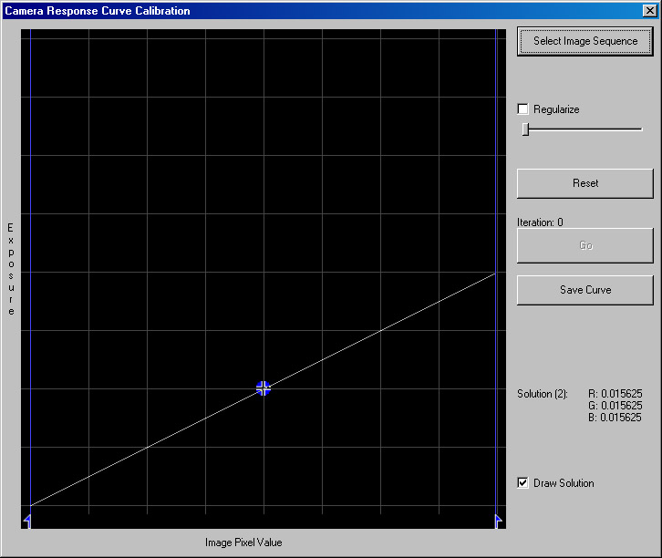
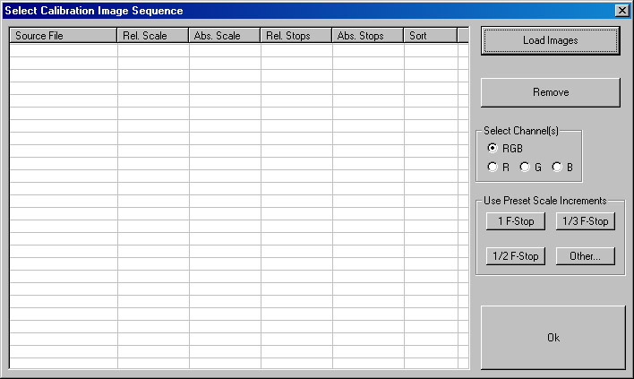
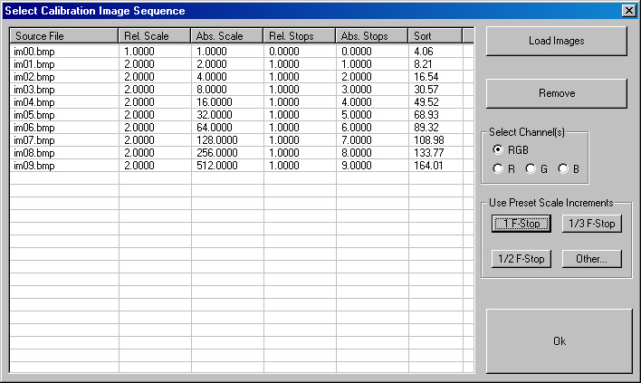
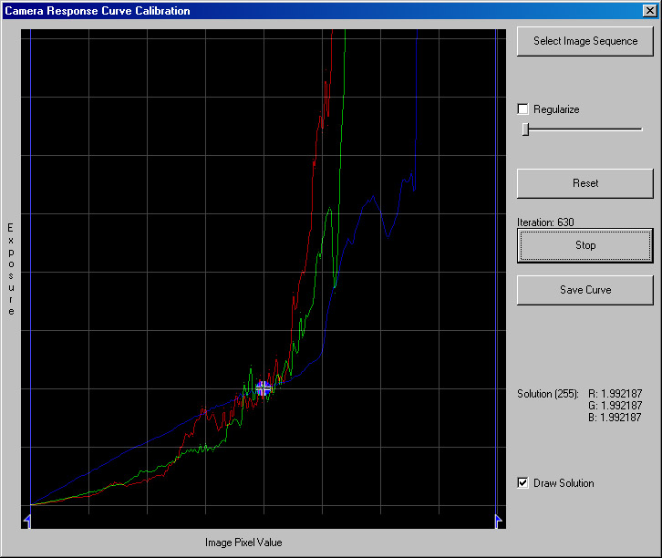
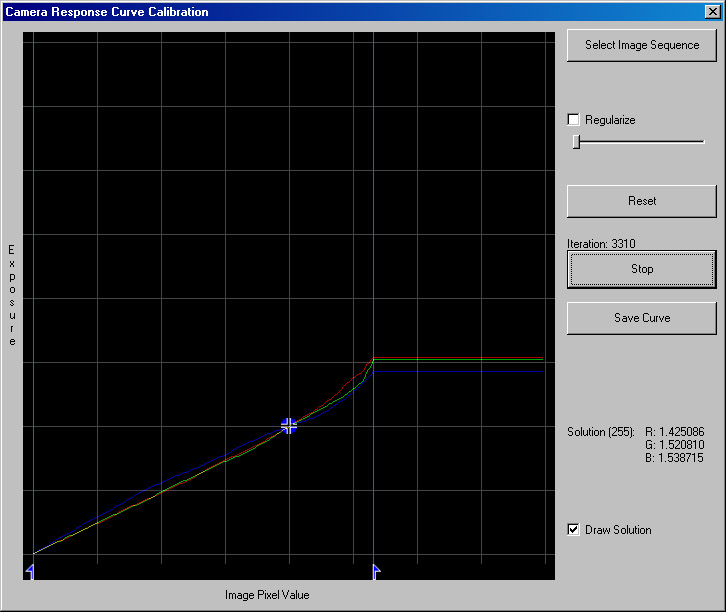
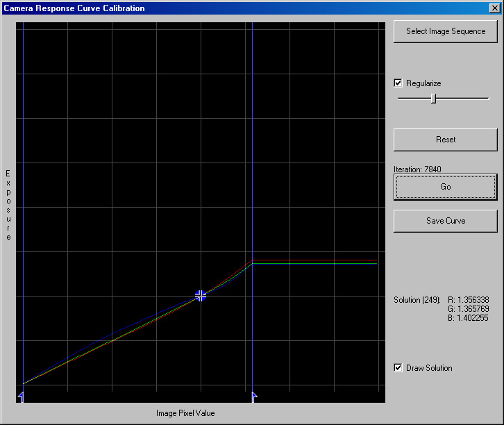

多くのデジタルカメラは「ガンマ2.2」のマッピングと異なっているため、カメラレスポンス曲線を明確に取得する必要があります。このためのプロセスを、カメラカーブ・レスポンス・キャリブレーション
(Camera Response Curve Calibration)と呼んでいます。実際は、簡単な作業です。まず既知の露光値で、同一のシーンを複数枚撮ります。細かい段階での多段階露光ほど良いです。1/2から1/4段階の露光を推奨しますが、殆どのカメラの標準でもある１段階露光でも大丈夫でしょう。もし良好な露光値（明るい領域と暗い領域、及びその間の要素を、万遍なく写す露光）が判るのであればキャリブレーションは２つほどのイメージで行うことができます。しかし、殆どの場合、良いカーブを得るためには４つまたは５つ程度のイメージを必要とするでしょう。これらのイメージが揃ったら、HDR Shopのメニューバー，“Ｃｒｅａｔｅ”から“Calibrate Camera Curve”を選択し、カーブ・キャリブレーター（“the
Curve Calibrator”）を開始します。

キャリブレーション・イメージを指定するために、“Select Image Sequence”ボタンをクリックします．すると、“Select Calibration Image
Sequence”ダイアログ・ボックスが開きます。

シークエンスに追加するファイルを選ぶために、“Load Images”ボタンをクリックします。ロードされたファイルは、“sort”カラムに基づいて、自動的にソートされます。このカラムは、始めに平均ピクセル値を格納します。ファイルの順番が適切ではない場合、カラム内の値を変更することで配列し直すことができます。
次に、シークエンス内の各イメージに、EVを入力します。カラムに従って、４種類のフォーマットでデータを入力することができます。例えば“Abs. Stops”は、各イメージの絶対的EV値です（訳注：つまり、EV値をそのまま入力します）。“Rel.
Stops”は、１つ前のイメージからの相対的EV値です（訳注：１つ前のイメージのEV値との差分を入力することになります）。
スケール・カラムは、それらEV値における実際のスケーリング値を格納します。シークエンス全体が、等間隔のEV値で撮影されていれば、 “Preset Scale
Increments”のどれかから、そのEV値を選べます。

もし、間違ったファイルを選択したり開いたりした場合、そのファイルを選択した上で
“Remove”ボタンを押せば、削除することができます。
デフォルトでは、３チャンネル（Red, Green, Blue）全ての値を同時に入力することになります。もし、各チャンネルに異なる値を入力したいのであれば、“Select
Channel (s)”からR,G,Bのいずれかを選び、そこに値を入力します。この機能は、EV値をコントロールするためのフィルターを使っている時に有効です。例えば、NDフィルター（“Neutral
Density” filter）は、必ずしも 赤緑青 それぞれの光に対して中立ではありません（青光は赤光より、よりフィルタリングされます。つまり、よりブロックされます）。
イメージに関する全ての情報がそろったら、OKボタンをクリックします。イメージ・データがロードされ、“Camera Response Curve Calibration”のダイアログ・ボックスに戻ります。この時点で、“Go”ボタンをクリックすることで、トーンカーブ近似計算を実行することができます。

画面中央にある青い十字で、曲線 (curve) の尺度 (scale) を調整することができます。これは、計算自体には何らかの影響を与えるものではなく、曲線の他の部分を調べるために使います。
グラフ下部にある青矢印を動かすことで、有効なピクセル範囲を選択することができます。ここで挙げた例では、ピクセルが160辺りの非常に低い値に留まっているため、計算がうまくいっていません。160よりも大きい値を無視するために、画面右下の矢印を動かすと、カーブの形状は崩れますが、良い結果をもたらすことになるでしょう。

必要であれば、カーブの凹凸部分を取り除くために、それらの要素の正則化（即ち、スムージング）を適用することができます。“Regularize”チェックボックスをクリックし、スライダーを使って正則化の度合いを調整してください。

この図のようなカーブができたら計算を中止し、ファイルに保存してください。